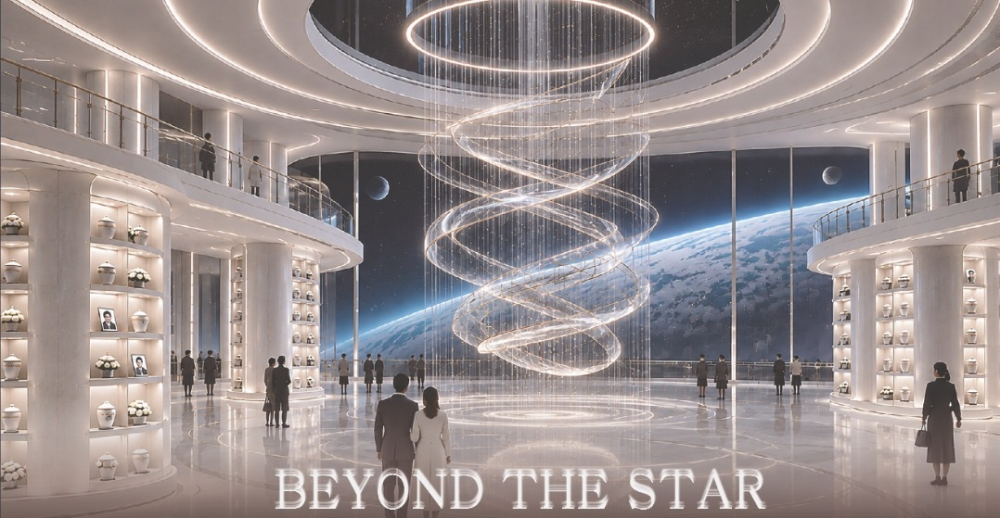

← All projects
Future Space · Memorial Design
Beyond the Star
기억이 별이 되는 곳 — 미래형 우주 추모시설 제안
Design proposal · 개인 기여 범위는 추후 기재

Concept & Program
ASTERA는 지구의 토지 및 환경 문제를 배경으로 우주를 새로운 추모의 터전으로 상상한 미래 공간 제안이다. 메모리 룸과 홀, 무연고자 추모실, 개인 추모실, 라운지 등으로 구성한다.
Technology
인간 중심 조명, NFC/RFID 인증, 프라이버시 글라스, 디지털 아카이빙 등 추모 경험을 지원하는 기술 적용을 제안한다. 실제 구축 성과가 아닌 설계 구상이다.
Planning & Journey
원형 매스와 층별 공간 구성, 이용자 여정에 따른 이동과 추모 경험을 계획한다.